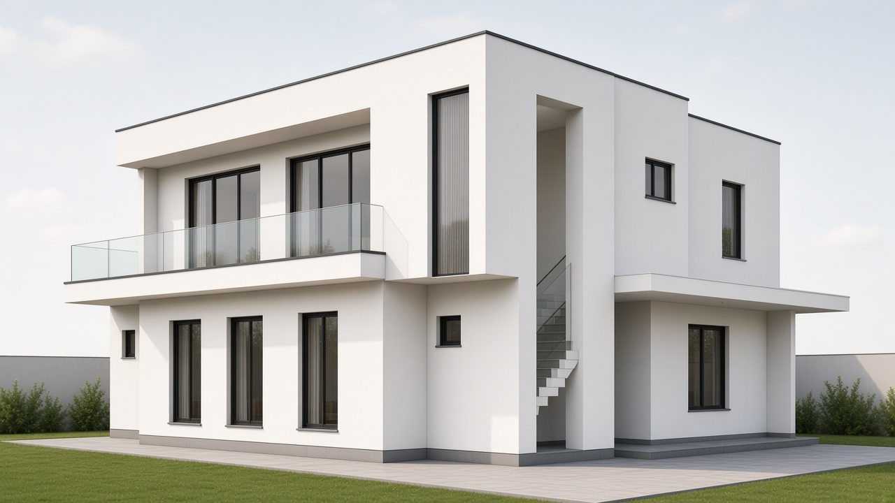
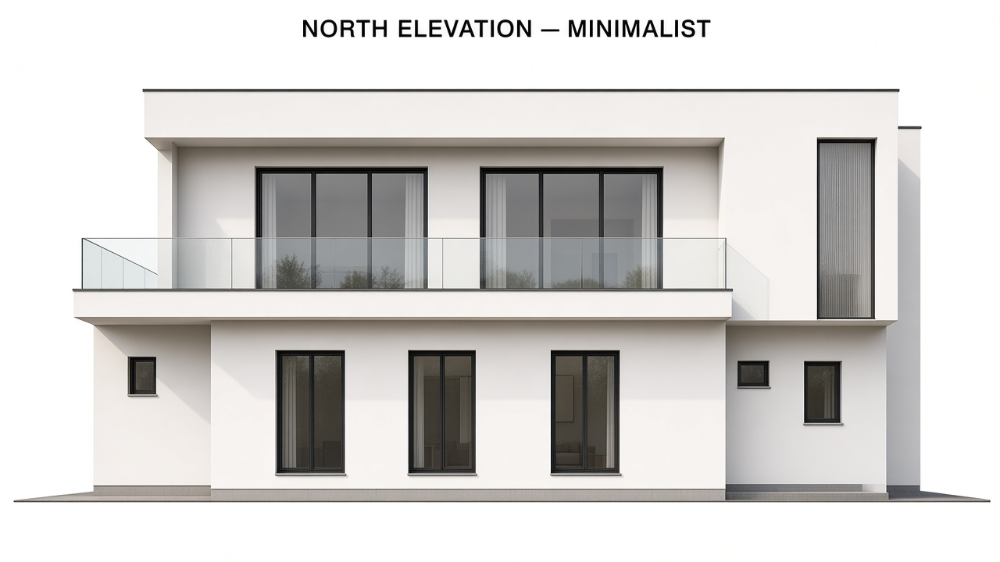
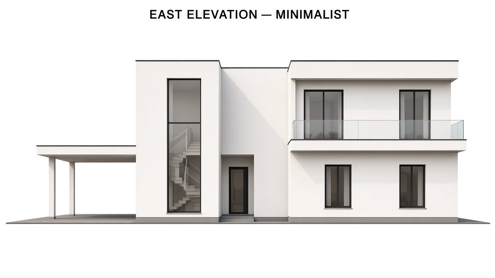

Valamil Residence
Modern minimalist elevation — glass balcony, north sliding doors, enclosed stair as facade — read from the ground and first floor plans.
Corner view
Northeast — north glass balcony + east enclosed stair.

Elevations
Orthographic street elevations aligned to the plans.


Design notes
How this revision follows the brief and the plans.
Ground floor
- North: toilet mass quiet; Drawing — 3 tall windows
- East: kitchen openings + car bay under thin slab
- Master bedroom windows toward south end
- Openings kept as per plan
First floor
- 6'-6" north balcony — clear glass balustrade
- Full-height sliding doors from sit-out
- 4'-0" west balcony glass return
- Clean white volumes, slim black frames
Staircase
- External U-stair on east — now covered
- Vertical white volume in the elevation
- Tall glazed slot for light / reading stair
- Reads as architecture, not an add-on
Source plans
Uploaded ground and first floor references.